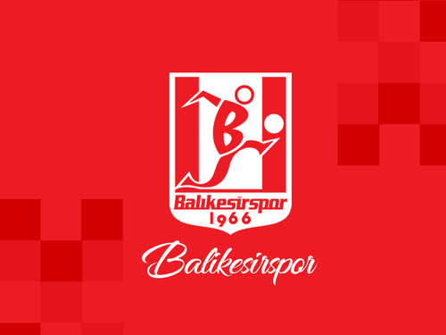
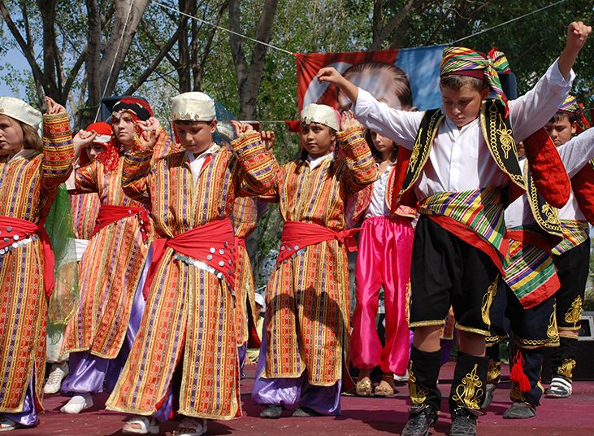

BALIKESİR'İN MEŞHUR YEMEKLERİ
Saçaklı Mantı
Malzemeler :4 su bardağı un,1 adet yumurta,2 yemek kaşığı margarin,1 adet tavuk,5 yemek kaşığı tereyağı.
Yapılışı :Yumurtalı hamur açılır. Açılan hamur yufka haline getirilir. Yapılan yufkalar ince ince kıyılır. Uzun saçaklar meydana getirilir. Tepsiye dizilerek fırında yağ ile kızarıncaya kadar pişirilir. Kızarınca üzerine tavuk suyu dökülür. Tavuk etleri lif lif ayrılarak üzerine dağıtılarak servis yapılır.
Tavuklu Mantı
Hamur yoğrulur içi boş olarak dört tarafından bükülerek şekil verilir ve fırınlanır. Tavuk suyunda mantılar haşlanır. Üzerine tavuk etleri ve haşlanmış nohut dökülür. Daha sonra üzerine sarımsaklı yoğurt dökülür. Tereyağ kızdırılır üzerine dökülür. Çeşitli baharatlarla ( nane , pul biber ) servis yapılır. 1 Kg. tuzsuz peynir tencereye konur. İçine bir çay kaşığı kabartma tozu atılır. İçine iki yumurta sarısı, çalkalanarak ilave edilir. Hafif ateşte karıştıra karıştıra yağı çıkıp bal rengi sarısına bürünene kadar bir saat pişirilir. Kıvama gelmiş olan peynire 250 gr. irmik, 100 gr. un , 1Kg. toz şeker ilave edilir. Şeker eriyip yağ salana kadar bir süre karıştırılarak pişirilir. Soğutularak servis yapılır.
Höşmerim
Balıkesir mahalli yemekleri oldukça zengindir. Bu yemekler özellikle düğün, hayır gibi törensel mahiyetteki toplantılarda hazırlanmakta ve davetlilere sunulmaktadır. Bu yemekler arasında tirit, börülce, sura, manav tarhanası, saçaklı mantı, keşkek, mafis, güveç, peynirli patlıcan, düğün çorbası , zerde gibi yemekler ile Balıkesir Kaymaklısı, höşmerim, kalbura bastı gibi tatlılar dikkati çekmektedir.
Mafiş Tatlısı
Malzemeler :1 yumurta,1 fincan yoğurt,1 fincan ayçiçek yağı,1 fiske tuz,1 çay kaşığı karbonat,alabildiği kadar un.
Yapılışı :Yumurta,yoğurt, ayçiçek yağı, tuz,karbonat ve un hamur haline gelecek kadar yoğrulur. Ceviz büyüklüğünde parçalanır. Her parça iki el büyüklüğünde oklava ile ince ince açılır ve kareler halinde kesilir.Kareler fiyonk şeklinde ortadan büzülerek kızgın yağa atılarak kızartılır. Yağdan alınan hamurlar önceden hazırlanmış soğuk olan şuruba atılır. Tatlılar şurubu çekince servis tabağına alınır.
Balıkesir Kaymaklısı
Malzemeler :1 kg Un, 300 gr tereyağı,6 yumurta,700 gr kaymak, 2 kg. şeker ve üstüne gelinceye kadar su.
Yapılışı :Un hamur tahtasında elenir, ortası açılır. Tereyağı ve süt konup karıştırılır. Yoğrulur. Dinlendirildikten sonra on iki parçaya bölünüp yağlı bir tepsiye konulur. Her yufkanın kırılmaması için elle su serpilir, diğer 6 yufkada diğer yağlı tepsiye yerleştirilir. Fırında veya mangalda pişirilir. Alt kısımları kızarınca iki tepside ateşten indirilir. Birinci tepsideki yufkaların üst yufkası üzerine bolca kaymak yayılır. Kümeler halinde de konulabilir. Diğer tepsideki yufkaların alttaki kızarmış tarafı üste gelmek üzere birinci tepsideki kaymakların üzerine kapatılır. Ilık halde reçel şurupları koyulduğunda şerbet soğuk hamur üzerine gezdirilerek dökülür, kapak katılır. Soğuduktan sonra servis yapılır.
BALIKESİR'İN FUTBOL TAKIMI
1965 yılı Nisan ayında Futbol Federasyonu başkanı merhum Orhan Şeref Apak imzalı olarak Balıkesir Beden Terbiyesi Bölge Müdürlüğü`ne bir yazı gelir. Bahse konu yazıda ülkemizde Anadolu’ya yayılması planlanan ve organizasyonu başlatılan 2.profesyonel Türkiye futbol liginin devam ettiği ortamda Balıkesir ilinin de profesyonel takım kurma hakkı olduğu belirtilir. Bunun üzerine Beden Terbiyesi İl Müdürü merhum Selman Doğuşkan il merkezindeki kulüp temsilcilerini o günlerde Atatürk Stadı kapalı tribün altındaki il binasında toplayıp yazının içeriği ile ilgili bilgi verir. İlimizdeki kulüp temsilcileri olan o günkü yöneticiler profesyonel takım kurmanın büyük mali külfet getireceğini dikkate alarak suyun kaynağının bulunması gerektiğini ve taşıma suyla değirmen dönmeyeceğini söylerler. Dolayısıyla bu profesyonel futbol takımı kurulması teklifinin de ileri bir tarihe ertelenmesine karar verilir. Bunun üzerine imza altına alınan bu karar cevaben Futbol Federasyonuna iletilir.
Balıkesirspor kulübünün resmi formaliteleri ikmal edilip, gereken müsaadeler alındıktan sonra şehirde para toplama kampanyaları başlatılmıştır. İlk olarak Ordu donatım okulunun bandosu eşliğinde yönetim kurulu, başkan ve üyeleri ile tüm Balıkesir gençleri, sporseverler Belediye binası önünden başlamak üzere Anafartalar ve Milli Kuvvetler caddeleri ile Paşa camii çevresini ve şehrin diğer semtlerini baştan başa dolaşıp Atatürk abidesine törenle çelenk koymuşlardır. Diğer taraftan o zamanın Emlak Kredi bankası müdürü Fethi Başeden, Belediye Reisi Hüseyin Baştuz, Hurşit Kangal, Münir Yenal ve daha bazı tanınmış kişiler,çarşıdaki mağazaları, dükkanları, işyerlerini, sanayi bölgelerini ve fabrikaları aralıksız olarak on-onbeş gün dolaşmış, Balıkesirspor 'a bir milyon TL’nin üzerinde fevkalade büyük bir bağış toplamışlardır. Ayrıca Sırrı Yırcalı yardımlarını maddi ve manevi olarak yapmakta öncülük etmişlerdir. Bunlardan başka banka1arda hesaplar açılmış, sinemacılar haftalık ve günlük gelirlerini 15 gün için Balıkesirspor 'a bağışta bulunmuşlardır. Şehrimizde yeni kurulan Balıkesirspor 'a karşı gösterdiği ilgi, sevgi ve yapılan her çeşit yardımlar Balıkesir’in spor tarihinde görülmüş fedakarlıklar değildir. İşte bu içten sevgi halesi içerisinde hazırlanan Balıkesirspor daha önceden tespit edilen 7-8 futbolcuyu İstanbul ve çevre kulüplerinden transfer etmiş, ilk antrenör olarak da Avusturya'dan yeni dönen, Fenerbahçe'nin eski kalecilerinden Şükrü Ersoy’la anlaşmıştır. 1966 yılının ağustos ayında federasyonca çekilen kura sonucunda Balıkesirspor ilk maçını Malatya da Malatyaspor’la yapacaktı. Hazırlıklar yapıldı.4-5 otobüsle Malatya ya gidildi. Orada yapılan tarihi maçı Balıkesirspor üstün ve ezici bir oyundan sonra 3-1 kazandı.
Tüm Balıkesirliler büyüklü-küçüklü her yaştaki insanlar Balıkesirspor’u değirmen boğazında karşıladılar.Konvoylar halinde şehrin mahalle ve sokakları gece davullar çalınarak dolaşıldı.
BALIKESİR HALK OYUNLARI
Balıkesir Halk Oyunları zengin bir yapıya sahiptir. Yörede bulunan birçok farklı etnik grup kültür çeşitliliğini ortaya çıkarmaktadır ve bu halk oyunlarına da yansımaktadır. Genel olarak bakıldığında İlde oyunlar daire, düz çizgi ve karşılıklı geçişler şeklinde oynanmaktadır. Yöredeki oyunlar genel halk oyunları türlerinden Zeybek, Güvende, Kaşık Oyunları ve Bengi sınıfına girmektedir.
Balıkesir Yöresinde Günümüzde Oynanan Başlıca Halk Oyunlarının İsimleri:
Harmandalı, İkili Güvende, Toplu Güvende, Bengi, Baydan Nazmiye, Karyolamın Demiri, Akpınar, Hatçam, Azime, Bağ Yüzünün Çamları, Durnalar, Tüllek (İğde Dalı), Demirciler, Ağır Hava, Koca Arap, Kemeraltı, Doğanlar Zeybeği, Sekme,Kayalcanın Taşları(Yörük Ali), Mendili Oyaladım, Karşılama, Şerifem, Aşağı Yoldan,Tünleme, Mende, Yörük Dağı, Ninna, Suda Balık Oynuyor, Sarı Karınca, Köroğlu, Aldı Dereleri, Koybatın Dereleri, Dursunbeyin Hanları, Şıngır, Edremit Güvende, Yılanı Yılanı, Savaştepe Zeybeği, Bandırmalı Güzelim, Alay Havası, İsmailler Zeybeği, Koca Kuş, Koca Ceviz, Dada Zeybeği, Entarisi Damgalı, Oğlanın Adı Hakkı, Ergama, Sabai Güvende, Tabancalı, Kozak Dağının Çamları, İsmailli, Yanık Hatçem.